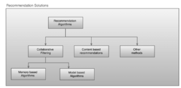
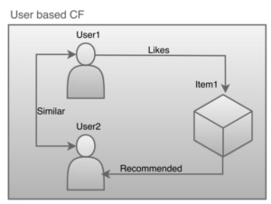
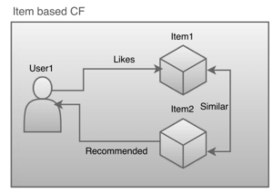
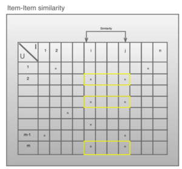
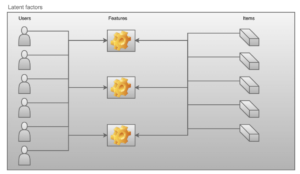
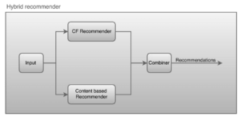

Push marketing model is embraced by many organisations to promote their products to potential customers. For example you may see Amazon promotions on a random web page. If you look closely, such promotions are custom tailored for each user. Personalised recommendations have become crucial because, there are thousands and millions of items to choose from but each customer is hardly interested in 1% of those items. The goal of the recommender systems is to identify the user interests accurately in real time.
Recommender systems need to answer the following questions
- For a user find a set of items that user might be interested in
- For a user and an item, is the user interested in it
- For an item find a set of users who might be interested in it
For most recommendation systems they only need to deal with question no 1 from the above list. In this blog we discuss various approaches and algorithms to implement recommender systems. The mathematics of algorithms is avoided in this blog to keep it plain and simple.
Recommender types
Recommender methods can be broadly categorised into
- Content based recommendations (CBR)
- Collaborative filtering (CF)
- Other methods such as social filtering, etc

Recommendation algorithms, a very active field of research currently. Continuous research is aimed at developing efficient and accurate techniques. Most popular algorithms at the moment fall into these two categories: CF, CBR.
CBR systems produce recommendations by comparing the attributes/contents of items to the profile of the user. Accuracy of CBR systems depends on the available details of users and items. CBR systems require domain specific analysis to identify relevance between the user profile and contents of items. Building recommendations based on CBR systems alone is a challenging task. First of all, the necessary data(complete user profile and preferences) is usually not available. And secondly, it involves complex data analysis which can not be reused for different use cases of an application. So it does not easily scale for new requirements and use cases.
In collaborative filtering, the user profile and item details are not considered at all. For this reason this technique works for most domains and use cases. Collaborative filtering is most prominently used method today in various applications such as e-commerce applications, movies, food applications etc. A number of algorithms have been developed for building collaborative filtering based recommenders. The foremost premise in collaborative filtering is that the user’s liking to the item should be quantified as rating. In most cases even if the users do not explicitly rate the items, it is possible to derive them from user’s past actions such as purchases/browsing history.
In this blog we discuss collaborative filtering in detail and various approaches in building a CF recommender systems.
Collaborative filtering
There are several techniques to approach collaborative filtering. Most prominent ones are
- User based collaborative filtering
- Item based collaborative filtering
- Latent factors method
User based CF
In user based collaborative filtering, in order to produce recommendations for a user, the system first finds similar users to the target user. The items that were liked by the similar users are recommended to the target user.

Consider the above diagram as an example. From the past history it is known that the User1 likes Item1. And recommender found out that User1 and User2 are similar based on their past activity. In this case Item1 will be recommended to User2.
Algorithms: K-nearest neighbours
This approach is memory based and does not involve offline computations. Entire data set of users and items is used to identify the neighbourhood of the target user.
Pros
- Recommendations are based on fresh/latest data
- Recommender only computes what is necessary
Cons
- Does not scale with increasing number of users and items
- Not efficient. More likely to violate response time SLAs due to the quadratic time complexity(worst case)
- Sparsity. In most systems each user purchases less than 1% of the items on an average. It is difficult build nearest neighbour models in such cases.
Item based CF
In item based collaborative filtering, the system pre computes item similarities based on the ratings given by the users. To produce recommendations for a given user, the recommender simply returns the items which are similar to the ones liked by the user.

Consider the above diagram as an example. Here User1 likes Item1. And recommender has found out that Item1 and Item2 are similar based on their ratings given by all users. In this case Item2 will be recommended to User1.
Item based collaborative filtering is preferred to user based collaborative filtering for the following reasons
- Item similarities are relatively static when compared to user similarities. For this reason item similarities can be computed offline. Models generated by the offline computations help quickly respond to the recommendation queries in real time
- Scales with increasing number of users and items
Following techniques can be followed to compute the item similarities
- Cosine based similarities
- Correlation based similarities
- Adjusted cosine similarities etc…
Co-rated items
Item-item similarities are computed by taking co-rated items into account. Co-rated items are those which are rated by same user. In the following user rating matrix, the similarity between items i,j is computed by considering the highlighted ratings only.

So the ratings given for Item-i but not Item-j and ratings given for Item-j but not Item-i will be ignored in computing the similarities between items i,j
Pros
- Quick generation of recommendations in real time
- Scalable
Cons
- Recommendation can go stale. The models need to be refreshed periodically.
- Similarity computations are very costly and can pose as bottleneck in refreshing models, specially when the refresh intervals for a given uses are shorter.
- Even if lot of ratings are available for items but not by common users, then the similarities can not computed. In cases where lot of ratings are available for items but very few by common users, then the similarities can not be computed and computed similarities also will be inaccurate as only a fraction of data is used in these computations.
Latent factors
Latent factor models aim to improve the ratings generated by item based filtering mechanisms. In item-based filtering, the ratings are generated by only considering co-rated items. Latent factors models approach the rating generation problem in a more generic fashion.
Latent factor models are based on the idea that the user’s liking for an item is based on a set of factors. The factors are domain specific. For example in case of movies the genre, length, etc can be considered as factors that may impact the user’s rating for a given movie. Similarly in case of food items cuisine, spiciness, restaurant, ingredients can be considered as significant factors that can potentially influence the user’s rating for a food item. Latent factor models infer these factors implicitly, by associating each factor with each user and each item. Once all the factors are inferred, all user-item ratings can be generated using these latent factors.

In this approach both the users and items are characterised by a set of latent factors.
Consider the movie recommendations for example.
- A movie can belong to action, romance, comedy, thriller, horror genre. And it can be a combination of these factors as well, like romantic-comedy, action-thriller, horror-comedy etc.
- Each user can show different interests in each of these factors.
Latent factor models try to infer above two associations and quantify user-factor associations and item-factor associations. Number of factors is not fixed in this model. It can be used as a tuning parameter to the model.
Matrix factorisation
Matrix factorisation is a technique used to compute latent factors, from a user rating matrix. For m users and n items, the rating matrix will be of order mXn. Assuming that there are r factors, this technique is about finding two matrices or orders mXr & rXn such that
RatingMatrix(mXn) = UserFactorMatrix(mXr) * ItemFactorMatrix(rXn)
The intermediary matrices are known as factor matrices or factor vectors. User factors are represented with a set of row vectors and item factors are represented with a set of column vectors.
Factor matrices are computed using error reduction techniques. Following algorithms can be used for error reduction
- Stochastic gradient
- Least squares
Hybrid recommenders
In hybrid recommender systems, the recommendations are computed by both techniques. Final set of recommendations are produced by combining both results.

Conclusion
CBR and CF are widely used techniques to produce recommendations. Building pure CBR system involves lot of effort especially when there are a wide range of use cases and it has strict constraints. CF recommenders are relatively easy to implement and apply to most use cases. It is best to combine these two approaches to produce desired recommendations. CBR techniques can be used to improve the recommendations produced by the CF recommenders.